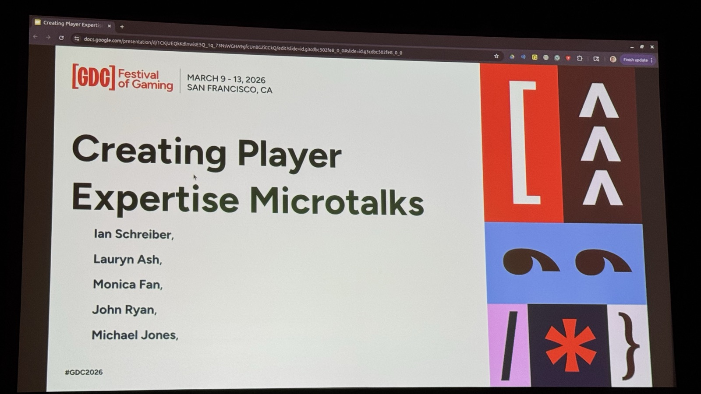
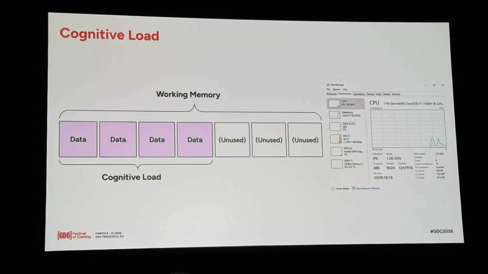
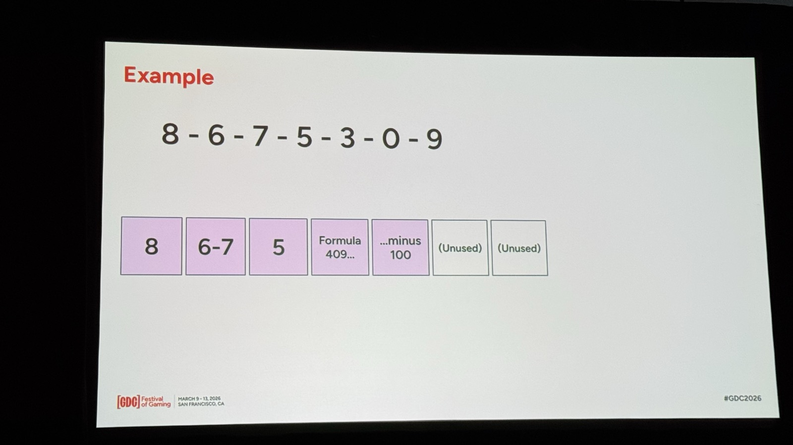
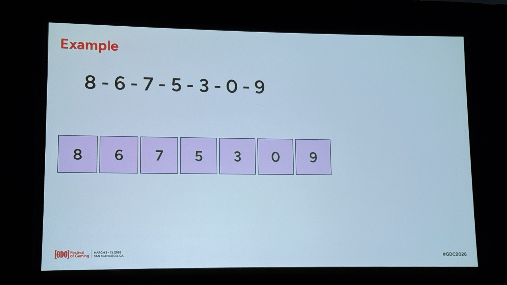
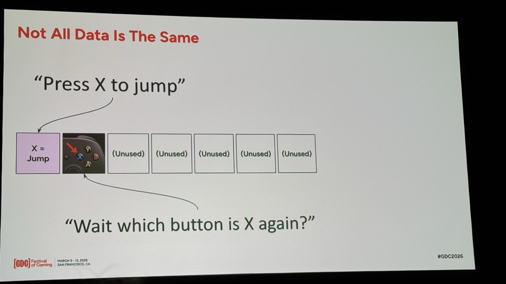
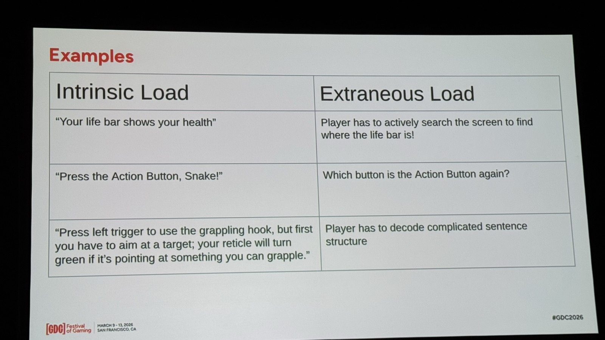
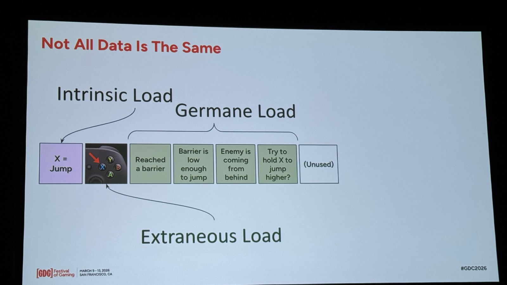
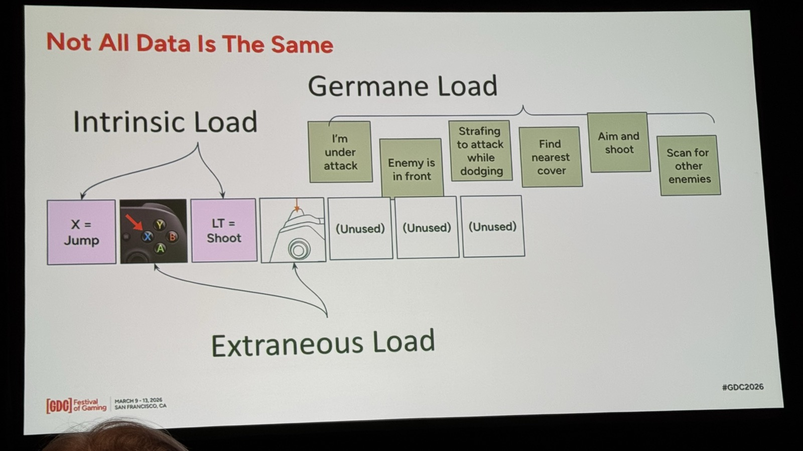

GDC 2026: プレイヤーの上達を設計する——認知負荷理論からのアプローチ
「このゲーム、操作が多すぎて何をしていいか分からない」——チュートリアルを丁寧に作ったはずなのに、プレイテストでこう言われた経験はないでしょうか。
問題はコンテンツの量ではなく、プレイヤーの脳が一度に処理できる情報量を超えていることにあります。認知心理学では、人間のワーキングメモリ（作業記憶——いま意識的に操作している情報を一時的に保持する脳の機能）は約7スロットしかないことが知られています。このスロットをどう使わせるかが、上達体験の設計そのものです。
GDC 2026のDesignトラックで行われた “Creating Player Expertise Microtalks”（プレイヤーの熟達についてのショートトーク集） で、Ian Schreiberはまさにこの認知負荷理論（Cognitive Load Theory——人間の脳が一度に処理できる情報量には限界があり、その限界を考慮して学習を設計すべきだとする教育心理学の理論）をゲームデザインに応用するアプローチを発表しました。
本記事では、現地で撮影したスライドとトランスクリプト（講演の書き起こし）をもとに、Schreiberの講演内容を詳しく解説します。

セッション概要
| 項目 | 内容 |
|---|---|
| タイトル | Creating Player Expertise Microtalks |
| トラック | Design（Player Engagement） |
| 形式 | Microtalks（5人のスピーカーがそれぞれ10分程度のショートトークを行う形式。GDCでは1つのテーマについて複数の視点を短時間で紹介する際によく採用される） |
| 日時 | 2026年3月10日（火）15:10–16:10 |
| 場所 | Room 2016, West Hall |
| 対象 | All Levels（初心者から上級者まで） |
スピーカー一覧
| スピーカー | 所属 | 専門領域 |
|---|---|---|
| Ian Schreiber | Independent | ゲームバランス、学習曲線設計、教育。著書『Game Balance』（共著: Brenda Romero）はゲームデザイン教育の定番テキストとして知られる |
| Lauryn Ash | Stealth Startup（未公開のスタートアップ） | レベルデザイン、ナラティブデザイン |
| Monica Fan | Pipework Studio | ゲームプレイ＆システムデザイン、アクセシビリティ |
| John Ryan | Independent | ゲームデザイン |
| Michael Jones | Independent | ゲームデザイン |
ワーキングメモリ = 脳のRAM
Schreiberはまず、人間のワーキングメモリをPCのタスクマネージャーに例えるところから始めました。

ワーキングメモリには約7つのスロットがあり、データを格納するとスロットが埋まっていきます。CPUの使用率が上がるとPCが重くなるように、認知負荷が高まるとプレイヤーの脳も「ラグ」を起こす。
ここで重要なのは、「タスクの難しさ」はタスクそのものではなく、ワーキングメモリのスロットをいくつ消費するかで決まるという点です。
チャンキング: 7桁を5スロットに圧縮する
Schreiberは具体例として「8-6-7-5-3-0-9」という7桁の数字を挙げました。

何の前提知識もなければ、各桁がそれぞれ1スロットを占有し、7スロットすべてが埋まります。他のことは何もできません。
しかし、既知のパターンを使ってまとめる（チャンキング——複数の情報をひとまとまりの「チャンク」として記憶する認知テクニック）と状況は変わります：

- 「8」→ 1スロット
- 「6-7」→ 連番として1スロット
- 「5」→ 1スロット
- 「Formula 409…」→ アメリカで広く知られている家庭用洗剤ブランドの番号（409）として1スロット
- 「…minus 100」→ 演算として1スロット
7スロット → 5スロットに圧縮され、2スロットが空く。この「空きスロット」が、より高度な思考に使えるリソースになります。
「この歌を知っていれば（“867-5309/Jenny”——1981年にアメリカで大ヒットしたTommy Tutuneの楽曲。曲名がそのまま電話番号になっており、アメリカでは誰もが知る番号）、たった1スロットで済む。知らなければ7スロットすべてを使う。」
ゲームにおけるエキスパティーズ（熟達——そのゲームに習熟した状態）とは、まさにこのチャンキングが進んだ状態のことです。
3種類の認知負荷
Schreiberの講演の核心は、認知心理学の3種類の認知負荷をゲームチュートリアル設計に適用する部分です。
Intrinsic Load（内在的負荷）: 覚えるべきデータそのもの
「Xボタンでジャンプ」——この情報自体が内在的負荷です。学習対象そのものの複雑さに由来する、削減しようのない本質的な負荷を指します。

しかし、「Xボタン」と言われたとき、プレイヤーは追加で考えなければなりません。Xbox コントローラーの左側のX？PlayStationの下のX？どのXかを思い出す作業は、本来覚えるべきデータとは別の負荷です。
Extraneous Load（外在的負荷）: 本題以外に消費される無駄な負荷
Schreiberは3つの具体例を示しました：

| Intrinsic Load（本来のデータ） | Extraneous Load（余計な負荷） |
|---|---|
| 「ライフバーが体力を表す」 | 画面のどこにライフバーがあるか探す |
| 「アクションボタンでドアを開ける」 | アクションボタンがどれか思い出す |
| 「左トリガーでグラップリングフック（ワイヤーを射出して移動するアクション）。ただし先にターゲットにエイムする必要があり、レティクル（照準カーソル）が緑になったらグラップル可能」 | 複雑な文章構造を解読する |
3つ目の例は特に重要です。説明が複雑すぎると、その文章を理解すること自体がExtraneous Loadになる。
「Extraneous Loadは『一時的なデバフ（ゲーム用語で、キャラクターの能力を一時的に低下させる効果）』のようなものだ。ワーキングメモリの使用可能スロットを減らしてしまう。チュートリアル設計では、これを可能な限り減らすべきだ。」
Germane Load（学習促進負荷）: 学びと戦略に使われる「良い」負荷
3つ目の負荷が最も重要です。Germane Loadは、プレイヤーが実際にスキルを習得するために使う認知リソースです。知識の体系化やパターンの発見といった、学習そのものに貢献する負荷のことを指します。

ジャンプを学んだばかりのプレイヤーの脳内：
| スロット | 種類 | 内容 |
|---|---|---|
| 1 | Intrinsic | X = Jump |
| 2 | Extraneous | コントローラーのどのボタン？ |
| 3 | Germane | バリアに到達した |
| 4 | Germane | このバリアはジャンプで越えられる高さか？ |
| 5 | Germane | 後ろから敵が来ている |
| 6 | Germane | Xを長押しすればもっと高く跳べる？ |
| 7 | (Unused) | — |
Germane LoadはSid Meier（『シヴィライゼーション』シリーズの生みの親）の名言「ゲームとは興味深い決断の連続である」そのものです。ワーキングメモリを適度に使わせることで、挑戦的だが過負荷にはならない。この状態がフロー（心理学者チクセントミハイが提唱した、活動に完全に没入している最適な精神状態）です。
そしてGermane Loadを通じて練習されたスキルは、長期記憶に転送されます。一度長期記憶に入れば、ワーキングメモリのスロットは不要になります。「Xボタンはジャンプ」がもう考えなくても分かるようになれば、そのスロットはもっと面白い判断に使えるようになる。
認知過負荷: 脳がラグる瞬間

しかし、Germane Loadであっても多すぎれば過負荷になります。Schreiberは戦闘シーンの例を挙げました：
- 攻撃を受けている
- 敵が正面にいる
- ストレイフ（横移動）しながら攻撃＆回避
- 最寄りのカバー（遮蔽物）を探す
- エイム（照準合わせ）して射撃
- 他の敵もスキャン
これらが同時に押し寄せると、7スロットを超え、脳が「ラグ」を起こします。
「コンピュータのCPUが限界に達してRAMが足りなくなったときと同じことが起きる。プレイヤーの脳がラグを起こす。プレイテストでは、プレイヤーが立ち止まって撃たれ続ける。高次の戦略・戦術機能が一時的にブロックされるからだ。」
脳のオーバークロック
人間の脳にはコンピュータにない能力がひとつあります。一時的にワーキングメモリのスロットを増やせるのです。ハードドライブを仮想RAMとして使い、CPUをオーバークロックするようなものです。
しかし、これにはコストが伴います：
「脳はこの状態を好まない。ストレス、不安、緊張、フラストレーションを引き起こす。フロー状態の完全な逆だ。」
短時間なら「パニック → 安全な場所に逃げる → 体勢を立て直す」というゲームプレイとして機能します。シューターで部屋に入ったら予想以上の敵がいた——数秒のパニックは許容範囲です。
しかし長時間続くと「認知疲労（Cognitive Fatigue——脳が長時間の過負荷によって処理能力が低下した状態）」になります：
認知過負荷の悪循環
──────────────────
情報過多 → 脳のオーバークロック → ストレス・不安
↓
長時間継続 → 認知疲労（Cognitive Fatigue）
↓
ワーキングメモリのスロットが一時的に減少（デバフ）
↓
過負荷がさらに悪化 → スパイラル
↓
闘争・逃走の生存モードに突入 → ゲームデザインとしては失敗「プレイヤーに一度に大量のコントロールを学ばせるような場面が、プレイセッション全体にわたって続くと、認知疲労が起きる。脳をオーバークロックし続けると、ワーキングメモリのスロット数が一時的に減少する。これが過負荷をさらに悪化させ、スパイラルに陥り、最終的に闘争・逃走の生存モード（fight-or-flight response——危険を感じたときに戦うか逃げるかの原始的な反応）に入る。デザイン的には、これは失敗状態だ。」
プレイテストで見える認知過負荷の兆候
Schreiberはプレイテスト（開発中のゲームを実際のプレイヤーに遊んでもらい問題点を発見するテスト手法）での具体的な症状を列挙しました：
- 同じミスを繰り返す（コントロールやメカニクスを忘れている）
- UIと「戦っている」（操作が目的ではなく障害になっている）
- 「上手くなれない」という無力感
- ゲームから弾かれる感覚（「分からない、分かりたくもない」）
- レイジクイット（怒りによる途中放棄）
ゲームデザイナーのためのテイクアウェイ
Schreiberの認知負荷理論から導かれるチュートリアル設計の指針をまとめます。原文で “Takeaways” と表現されていた部分で、「持ち帰って実践すべき要点」という意味です。
1. Extraneous Load を最小化する
| やってしまいがちなこと | 改善策 |
|---|---|
| UIの位置を説明せずにデータを伝える | ハイライトで対象を示してからデータを伝える |
| 「アクションボタン」と抽象的に指示 | 実際のボタン名やアイコンで指示する |
| 複雑な文章で一度に多くを説明 | 1つのアクション = 1つの指示に分解する |
2. Germane Load を適切にコントロールする
- 少なすぎる: 退屈。プレイヤーは学ばない
- ちょうど良い: フロー状態。スキルが長期記憶に転送される
- 多すぎる: パニック → 認知疲労 → 離脱
3. Intrinsic Load の長期記憶化を促す
- メカニクスを段階的に導入し、各メカニクスが長期記憶に定着してから次を追加
- 定着したスキルはワーキングメモリを消費しなくなる → 空いたスロットで新しいスキルを学べる
- これがPlayer Expertise（プレイヤーの熟達）の正体: チャンキングと長期記憶化によるワーキングメモリの効率化
4. 不要な情報を早く与えすぎるな
Schreiberが特に強調した実践的ポイントです：
「しゃがみを教えたのに、その後10時間使わないFPSのチュートリアル。ボードゲームのルールブックが『1ターンに3アクションポイント』と言いながら、アクションポイントの説明は3ページ後。文脈なしの情報は脳の中で遊休在庫になるだけだ。」
5. Simplification Pass（簡素化パス）を行え
「デザイナーは設計を進めるうちに複雑さを追加しがちだ。武器と防具で別画面が本当に必要か？グレネードと射撃で別ボタンが必要か、グレネードを武器として扱えないか？」
ここでいう “Simplification Pass” とは、実装がある程度固まった段階で、追加された複雑さを棚卸しして不要なものを削ぎ落とすレビュー工程のことです。追加した複雑さの正当性を厳しく検証すること。コントロールが固まったら、認知負荷の増加がゲーム体験の向上に見合うか確認する。
6. ワーキングメモリスロットを実際に数えろ
「客観的になれる。座って、プレイヤーが必要とするデータスロット数を実際にカウントすればいい。」
ただし、プレイヤーの前提知識によってスロット消費は変わります。「Haloコントロール（FPSの定番『Halo』シリーズと同じ操作体系）」と分かれば1スロットで済む人もいれば、初めてのゲームで12コントロールすべてが個別スロットになる人もいる。特に注意すべきジャンル：教育ゲーム、ジャンル入門作（そのジャンルを初めて遊ぶプレイヤーが多い作品）、ジャンルハイブリッド（複数ジャンルの要素を組み合わせた作品）。
なぜ「Player Expertise」が今重要なのか
このセッションがDesignトラックのPlayer Engagement（プレイヤーの継続的な関与）カテゴリに分類されていることには意味があります。
ゲーム業界がF2P（Free-to-Play——基本プレイ無料モデル）やライブサービス（継続的にコンテンツを更新・配信する運営型ゲーム）にシフトする中、プレイヤーの継続率はビジネスの生命線です。外的報酬（ガチャ、シーズンパス）による継続はコストが高く、疲弊も早い。対して、上達そのものが楽しいというフロー体験は、最もコスト効率の良い継続装置です。
| 継続の駆動力 | コスト | 持続性 |
|---|---|---|
| 新コンテンツ追加 | 高い（開発コスト） | コンテンツ消費で減衰 |
| 外的報酬（ガチャ等） | 中（企画コスト） | 報酬インフレで減衰 |
| 上達体験 | 低い（設計コスト） | 自己強化ループで持続 |
認知負荷理論は、この上達体験を科学的に設計するフレームワークを提供します。
まとめ
Ian Schreiberの講演は、「プレイヤーの上達」を認知心理学の言葉で精密に記述したものでした。
- ワーキングメモリは約7スロット — タスクの難しさはスロット消費量で決まる
- チャンキングがExpertise — 既知のパターンにまとめることでスロットを節約できる
- 3種類の認知負荷 — Extraneous（減らせ）、Germane（適切に使え）、Intrinsic（長期記憶に移せ）
- 過負荷は認知疲労を引き起こす — 短期のパニックはOK、長期は離脱の原因
- 長期記憶化 = スロットの解放 — 基礎スキルが自動化されることで、より高度な判断が可能になる
プレイヤーが「自分は上手くなっている」と実感するとき、脳の中ではIntrinsic Loadが長期記憶に移行し、空いたスロットでGermane Loadを楽しんでいる。この神経科学的プロセスを意図的に設計することが、Player Expertiseの本質です。